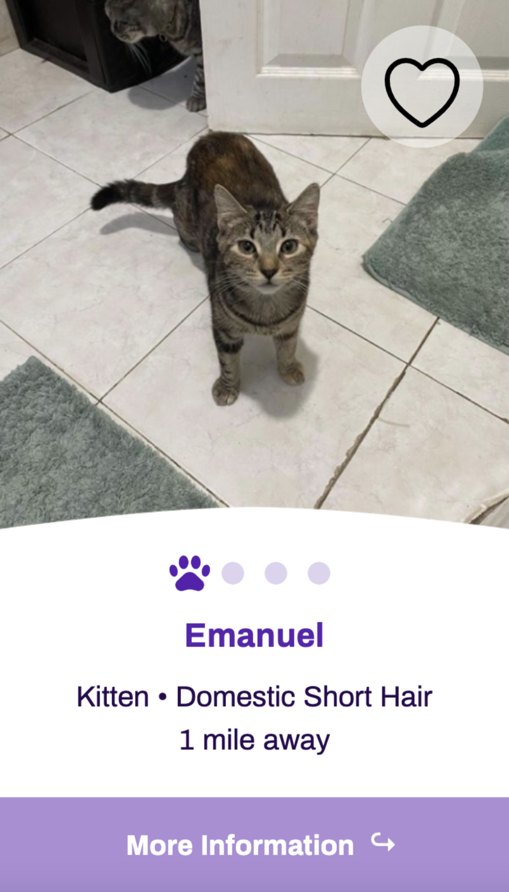

Microinteractions Case Study
Pet adoption card built using HTML, CSS, and JavaScript


The goal of this project was to create a series of meaningful microinteractions that would improve an existing element of a website interface. For this project, I focused on bettering the card components for Petfinder, an online pet adoption website. Over the course of ten weeks, I designed a pet adoption card, identified the triggers, rules, feedback, and modes for each microinteraction I wanted to build, and coded these microinteractions using HTML, CSS, and JavaScript. Some of the challenges for this project included brainstorming creative ways to store additional information on the relatively small pet adoption cards and debugging the code for my complex microinteractions. The final pet adoption card contains an image slider, a heart button to save a pet to a user’s favorites, and a button to flip the card over.
I created this project for my microinteractions class, and the timeline for this project was ten weeks. I started by identifying an existing element of a website interface that I wanted to improve by adding microinteractions. I chose to improve the pet adoption cards on the Petfinder website. As seen below, each Petfinder card contains an image of the pet available for adoption, a button to add the pet to a user’s favorites, and a short description of the pet. Since the Petfinder cards did not have many microinteractions, I decided this would be a good project for a microinteractions class.
The Petfinder website only has microinteractions for hovering over and clicking on the favorite button for a pet. When users click on a card component, they are immediately redirected to a different page containing a large amount of information about the pet available for adoption. One of my goals was to make more of this information available on the pet adoption cards. Since the pet adoption cards are not very large, I brainstormed ways to condense the information while making it look visually appealing. The main challenge for me in the early stages of this project was determining how to redesign the pet adoption cards to contain more information and incorporate meaningful microinteractions.
The project will be considered successful if the code functions smoothly and the microinteractions enhance the user experience. The redesigned pet adoption cards will also stay true to the Petfinder brand.
The style tile below shows how I wanted the redesigned pet adoption cards to look. I incorporated the purple colors from the Petfinder site and grabbed the images of a specific pet available for adoption. I also selected icons that would accompany the text and make the meaning of the text more clear.
The first set of microinteractions that I planned to build was an image slider. I wanted to allow users to view different images of each pet without going to a separate page. I chose to represent the image of the pet that was currently selected with a paw print icon because this complemented the theme of a pet adoption website. As seen below, when users select one of the dots in the image slider, the dot fades out to become a paw print, and the initial paw print icon fades out to become a dot. Simultaneously, the initial pet image fades out as the selected pet image fades in.


Building the image slider was the most challenging part of this project. When I coded the first iteration of the image slider, clicking on each slider dot revealed the pet image that correlated to the selected dot (e.g. clicking on the second dot revealed the second image). However, the pet images switched immediately, making the microinteraction feel abrupt. To improve upon this, I attempted to incorporate a working code sample with a crossfade transition between images into my code. In doing so, clicking on a slider dot caused the initial image to fade out as intended. However, the newly selected pet image never faded in, which left the screen blank where a pet image should have been visible. I spent several weeks attempting to resolve this issue by watching videos, reading online articles, and looking at similar coding projects. I finally solved this problem by going through my code line by line. When I identified the specific issue, I was able to adjust my HTML and JavaScript code, and the pet images faded in and out as intended.
I liked that the Petfinder website had a microinteraction for favoriting a pet. Therefore, I wanted to include a heart button on each redesigned pet adoption card and design an original "favoriting" microinteraction. When a user favorites a pet, the heart icon fills and grows, and when a user removes a pet from their favorites, the fill of the heart icon fades out. The different microinteractions for the heart button are shown below.
To accomplish my goal of storing more information in the pet adoption cards, I contemplated creating a modal when a user clicked on a pet card or allowing the card to flip over to reveal another side. I chose to pursue the second idea because this would mimic how users interact with physical cards, making it a meaningful microinteraction. I watched a video to learn how to create this animation, and I was able to achieve this relatively easily. The biggest challenge was deciding how to condense the information about the pet to fit on such a small card. I chose the most important information about the pet on the Petfinder site, including a biography of the pet and contact information to learn more about the pet.
The final solution includes hover states created with CSS and clickable objects implemented with JavaScript. It contains different pet images, a description of the pet, contact information, and the ability to favorite or unfavorite a pet. One unique design feature of the final pet adoption card is the image slider, which represents the currently displayed pet image with a paw print icon. By having a front and back to the card component, the final solution effectively shows additional information about the pet that was previously only available to Petfinder users after clicking on a pet card and being redirected to a new page on the Petfinder site. Overall, the redesigned pet adoption card implements a unique visual design and contains meaningful microinteractions that enhance the user experience.
Click here to view the final design
or watch the video walkthrough of the final solution shown below.If I were to continue working on this project in the future, I would continue to add functionality to improve the pet adoption cards. For example, I would build out more than one card to show what it would look like if a website had rows of pets available for adoption. I would also make the email and phone number on the back of each pet adoption card clickable to make it easier for users to send an email or make a phone call to the contact person responsible for the pet they are interested in adopting.
This project was a success because I was able to build out each of the microinteractions I had in mind. I wanted to make additional information immediately available to users before redirecting them to a new page to learn more about a specific pet. I achieved this by adding a back to the card containing contact information and including an image slider on the front of the card to display multiple images of the pet. I am also delighted that I was able to add personality to the pet adoption cards with the paw print on the image slider. Overall, I am delighted that I built complex, meaningful microinteractions that improved the user experience.